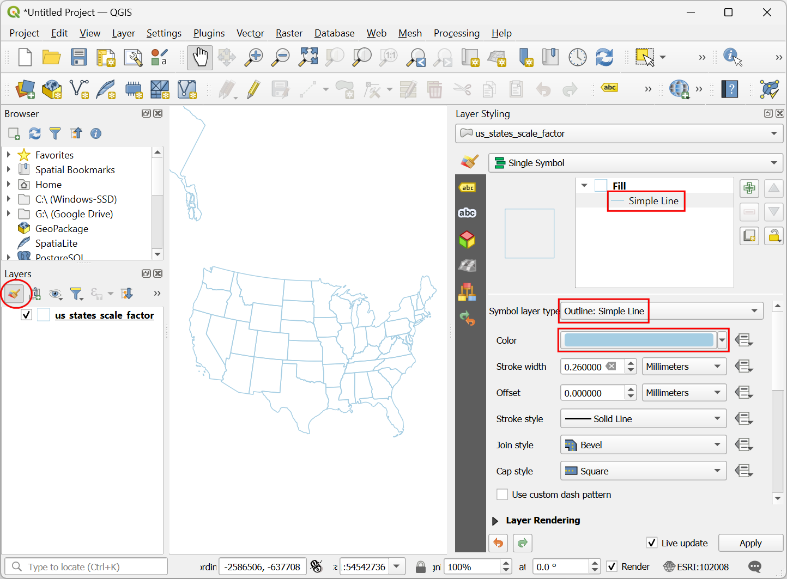
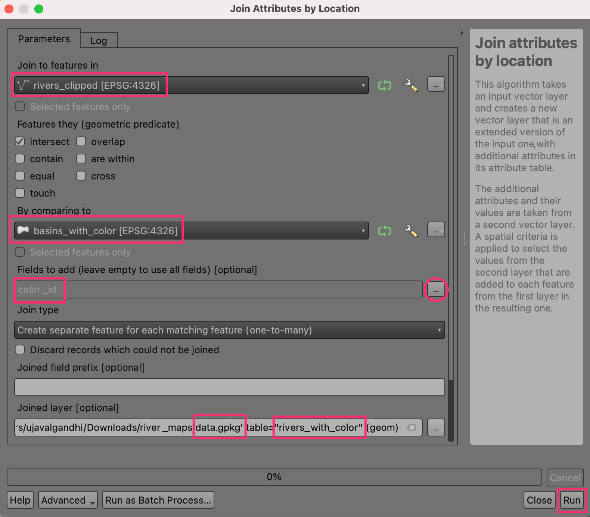

Realizzare Heatmaps (mappe di concentrazione)¶
Le mappe di concentrazione (o heatmaps in inglese) sono strumenti utili per identificare la densità di punti che rappresentano un certo fenomeno. Vengono ad esempio utilizzate per vedere la concentrazione di atti criminosi, o incidenti in auto, concentrazione di edifici etc. QGIS ha due optioni per creare mappa di concentrazione - una direttamente dalle opzioni di tematizzazione di un livello vettoriale, ed un algoritmo Heatmap (Kernel Density Estimation) che crea un raster da un livello vettoriale di punti.
Descrizione del compito¶
Lavoreremo con un dataset sugli eventi criminosi avvenuti nella zona del Surrey, Regno Unito, nell’anno 2011. Individueremo quindi le aree a maggiore attività criminale nel paese.
Altri aspetti che avremo modo di apprendere nel corso dell’esercizio¶
Utilizzare campi/colonne virtuali ed espressioni condizionali
Ottenere i dati necessari.¶
data.police.uk dati su eventi criminosi in un file CSV. Scarica i dati Surrey Police ed estraete l’archivio ZIP per avere il file CSV.
Per comodità, potete scaricare direttamente una copia del dataset dal seguente link:
Fonte Dati [POLICEUK]
Procedimento¶
We will first load a basemap layer from OpenStreetMap and then import the CSV data. In the Browser tab, scroll down and locate the XYZ Tiles section.

Expand it to see the OpenStreetMap tile layer. Drag and drop it to the main canvas. Next we will load the CSV file. Click the Open Data Source Manager button.

Nel pannello selezionate ora la sezione Delimited Text . Qui importate il file CSV con le informazioni sugli atti criminosi registrati. Cliccate il pulsante … vicino al pulsante File name e trovate il file scaricato
2019-02-surrey-street.csv. La colonna X field e Y field nella sezione Geometry Definition verrà automaticamente valorizzata con le colonneLongitudeandLatituderispettivamente. Il Geometry CRS devee essereEPSG:4326 - WGS 84. Verificate che appaia corretto nel pannello Sample data e selezionate Add, seguito da Close.

Vedrai due livelli nel progetto QGIS -
OpenStreetMapand2019-02-surrey-streetnel pannello Layers. Tasto destro sul livello2019-02-surrey-streete seleziona Zoom to Layer.

Vedrai i punti con la posizione degli atti criminosi sovrapposto alla mappa OpenStrettMap. I punti sono molto numerosi e non è facile capire dove si concentra il crimine. Una mappa di concentrazione aiuta ad interpretare questa informazione. Seleziona il livello
2019-02-surrey-streete clicca Open the Layer Styling panel.

Seleziona
Heatmap(mappa di concentrazione) nel menu a tendina. Il pannello Layer Styling panel è interattivo e puoi vedere subito le modifiche applicate al livello. La mappa di concentrazione viene disegnata con la scala di colore predefinita a sfumature di grigio.

Una mappa di concentrazione tipicamente viene colorata con scale che vanno giallo–rosso o bianco–rosso, dove la concentrazione maggiore fornisce più calore. Clicca il menu Color ramp e seleziona
Redscolor-ramp.

Devi poi scegliere un Raggio. Questo parametro imposta l’area che influenza ogni punto. Questo valore dipenderà dal tipo di dato analizzato. Per questi dati stimiamo che un crimine abbia effetto fino a 5 chilometri dal punto dove sono stati commessi. Nota bene che il SR/CRS (sistema di riferimento) del progetto, in questo esercizio è
EPSG: 3857- si vede in basso a destra nella finestra di QGIS. L’unità di misura di questo SR/CRS, è il metro, quindi dobbiamo mettere5000metri come raggio. Un altro parametro nascosto è il Kernel shape, o forma di funzione (kernel). Questo funzione determina il peso in funzione della distanza. La mappa di concentrazione utilizza la funzioneQuartic. Ci sono altre funzioni impostabili, comeTriangular,Uniform,TriweightandEpanechnikovche possono essere specificati, ma usando il secondo metodo presentato in questo tutorial. Vedi anche spiegazione post per una spiegazione e su come impostare il raggio ottimale.

La visualizzazione è pronta, possiamo modificare la trasparenza, o Opacity nella sezione Layer Rendering in basso. Mettete un valore di``60 %`` così da vedere anche la mappa di base sottostante.

Per alcune analisi, considerare la densità e basta può non essere abbastanza. Si vuole ad esempio dare più peso ad un crimine più violento. In modo simile alcuni punti possono rappresentare lo stesso evento riportato più volte. Per dare psi diversi aggiungiamo una colonna di «peso» o weight in modo da dare un peso per ogni punto. Tasto destro sul livello
2019-02-surrey-streete selezionare Open Attribute Table (apri tabella attributi).

Vedrete un campo chiamato
Crime typeche descrive il tipo di crimine. Possiamo utilizzare queste categorie per dare un peso diverso all’evento.

Fate click sul pulsante Open field calculator.

Inseriremo ora una fomula che fornisce un peso in funzione della categoria nella colonna
Crime type. QGIS ha un modo molto utile di creare campi virtuali - Virtual Fields. Il campo virtuale viene salvato nel progetto QGIS e non va a modificare i dati nella fonte (i.e. nel file). Viene calcolato dinamicamente e può essere utilizzato come qualsiasi altro campo nella tabella attributi. Inserisciweightcome Output field name e imposta il Output field type aWhole number (integer)(numero intero). Inserisci al seguente espressione nel Expression editor. Utilizziamo l’operatore CASE per assegnare diversi valori numerici in funzione della categoria del crimine. Clicca OK.
CASE WHEN "Crime type" LIKE 'Violence%' THEN 10 WHEN "Crime type" LIKE 'Criminal%' THEN 5 ELSE 1 END
Un nuovo valore verrà aggiunto per ogni punto con il peso calcolato dall’espressione.

Nel pannello Layer Styling clicca il menù a tendina Weight points by e seleziona la colonna appena creata
weight.

Vedrete la mappa cambiare dato che usa il peso indicato. Chiudi il pannello Layer Styling

Se volete che la vostra mappa sia memorizzata come un file raster permanente o volete usate il modulo Heatmap (Kernel Density Estimation) dal pannello Processing Toolbox (Strumenti di processing). Andate su .

Attenzione che prima di creare la mappa di concentrazione in questo modo, dobbiamo trasformare il SR/CRS in un sistema di referimento cartografico, i.e. proiettato. Infatti la distanza gioca un ruolo fondamentale nel calcolo del raster, e ragionare in termini di gradi (unità di misura di un SR geografico, i.e. che usa latitudine e longitudine), non è ottimale. Usate per questo il modulo

Nella finestra Reproject layer, clicca il pulsante Select CRS per Target CRS. Seleziona il SR/CRS
EPSG:27700 OSGB 1936 / British National Grid. Cliccare Run.

Un nuovo layer chiamato
Reprojectedverrà aggiunto al pannello Layers. Nasconti il livello precedete2019-02-surrey-street.

Seleziona e trova il modulo .

Nella finestra Heatmap (Kernel Density Estimation), useremo gli stessi parametri di prima. Selezionare Radius come
5000metri e Weight from field seleziona la colonnaweight. Impostare Pixel size X e Pixel size Y a50metri. Lascia Kernel shape alla funzione predefinitaQuartic. Clicca Run.

Nota
Il parametro Radius from field consente di specificare un raggio variabile usando i valori di una colonna. Può essere utilizzato insieme a Weight from field per impostare in modo più complesso l’influenza di ogni punto nello spazio.
Una volta terminato il processo, viene caricato un nuovo livello chiamato
OUTPUT. La visualizzazione predefinita non è ottimale in quanto utilizza la scala di grigiSingleband gray. Clicca il pulsante Open the Layer Styling panel .

Modifica il tema a
Singleband Pseudocolore seleziona la scalaReds. Il livello assomiglia a quello creato prima.

Nota
Notare che il livello OUTPUT nel pannello Layers ha una legenda ma il livello 2019-02-surrey-street no. Un problema comune nella mappe di concentrazione è la mancanza di legenda. Se vuoi utilizzarla nel modello di stampa Print Layout bisogna aggiungere una legenda. Il raster creato con quest’ultimo secondo metodo consente di avere una legenda.
If you want to give feedback or share your experience with this tutorial, please comment below. (requires GitHub account)